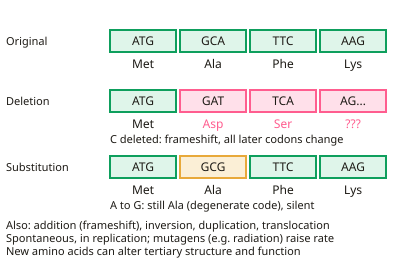

A-level Biology Year 13 · Topic 8
The control of gene expression
The control of gene expression explains how the same set of genes can build a nerve cell, a muscle cell or a cancer cell.
We will look at mutations, stem cells, and the many ways genes are switched on and off, from transcription factors and epigenetics to RNA interference.
Then we turn to genome projects and gene technologies: making and copying DNA, genetic engineering, DNA probes and genetic fingerprinting.
- 4 subtopics
- 165 questions
- Free: 8.1 notes and 10 questions
In this topic
- 8.1MutationsFree below · 23 questions
- 8.2Gene expression, stem cells and cancerOpen in Full Marks · 78 questions
- 8.3Genome projectsOpen in Full Marks · 22 questions
- 8.4Gene technologiesOpen in Full Marks · 42 questions
8.1 · Free notes
Mutations

Key points
- Gene mutations include addition, deletion, substitution, inversion, duplication and translocation of bases.
- Additions and deletions cause a frameshift, changing every codon after the mutation and often the whole protein.
- A substitution may have no effect because the genetic code is degenerate, or may change one amino acid.
- Mutations happen spontaneously, often during DNA replication. Mutagenic agents such as ionising radiation and some chemicals increase the rate.
- A changed amino acid sequence can change the protein’s tertiary structure and therefore its function.
In more detail
- Inversion and translocation: an inversion reverses a section of bases; a translocation moves a section of one chromosome to a non-homologous chromosome, which can disrupt genes at the break points.
- Duplication: one or more bases are repeated; this can cause a frameshift or produce extra copies of a gene, which over time can evolve new functions.
- Nonsense mutation: a substitution that creates a stop codon, giving a shortened, usually non-functional, polypeptide.
- Mutagen examples: ionising radiation (breaks DNA), UV light (joins adjacent thymines), and chemicals such as benzene and those in tobacco smoke that alter bases.
Practice
Mutations: 10 questions
Pick an answer to check it, or open the answer for the explanation.
1. Which mutation is most likely to cause a frameshift?
- Substitution of one base
- Deletion of one base
- Deletion of three bases
- Inversion
Show answer
B: Deletion of one base. Removing one base shifts the reading frame of all later codons.
2. Why might a substitution have no effect on the protein?
- The code is universal
- The code is degenerate, so the new codon may code for the same amino acid
- Substitutions never reach mRNA
- Proteins cannot change
Show answer
B: The code is degenerate, so the new codon may code for the same amino acid. Most amino acids have more than one codon.
3. What is an inversion mutation?
- A base is added
- A section of bases is reversed
- A base is lost
- A section is copied twice
Show answer
B: A section of bases is reversed. The group of bases is detached and reinserted the other way round.
4. Why might deleting three bases do less harm than deleting one?
- It removes one amino acid without a frameshift
- It never affects proteins
- It adds a stop codon
- It is always silent
Show answer
A: It removes one amino acid without a frameshift. The reading frame after the deletion stays the same.
5. Which is an example of a mutagenic agent?
- Glucose
- Ionising radiation
- Insulin
- Water
Show answer
B: Ionising radiation. Ionising radiation can damage DNA and increase the mutation rate.
6. Why might a large deletion mutation have a greater effect than a substitution?
- It always creates a stop codon
- It is more likely to cause a frameshift, altering many codons
- It never affects the protein
- It only affects introns
Show answer
B: It is more likely to cause a frameshift, altering many codons. Unless the deletion is a multiple of three bases, the reading frame shifts.
7. Which of these can act as a mutagen?
- Water
- Ionising radiation
- Table salt
- Glucose
Show answer
B: Ionising radiation. Radiation can directly damage DNA structure.
8. A 300-base coding sequence (100 codons) has base 100 deleted, in codon 34. About how many codons are altered?
- 100
- 3
- 1
- 67
Show answer
D: 67. The deletion causes a frameshift, so codon 34 to the end (about 67 codons) is read in a new frame. A substitution would change only one codon.
9. In sickle cell disease, a substitution changes a glutamic acid codon to valine in β-globin. Why does this alter haemoglobin?
- A frameshift changes every later amino acid
- Transcription of the β-globin gene is blocked
- The haem group is deleted from the polypeptide
- New R group alters tertiary structure and so function
Show answer
D: New R group alters tertiary structure and so function. The substitution changes one amino acid. Its different R group alters bonding, so the tertiary structure and function change. It is not a frameshift.
10. A substitution changes the codon UGG to UGA, a stop codon. What is the likely result?
- No change because the code is degenerate
- A shortened, probably non-functional polypeptide
- A polypeptide one amino acid longer
- A frameshift in all later codons
Show answer
B: A shortened, probably non-functional polypeptide. UGA ends translation early, giving a truncated polypeptide. Substitutions do not cause frameshifts, and a stop codon codes for no amino acid, so degeneracy does not apply.
Keep going in Full Marks
Full Marks has 23 questions on Mutations (13 more than here), set out in practice levels. You also get notes and 3D models for all 4 subtopics of The control of gene expression, plus games, timed exams and past papers.
On your exam board
- AQATopic 8: The control of gene expression
- OCR ATopic 6.1.1: Cellular control, Topic 6.1.3: Manipulating genomes
- OCR BTopic 5.1: Genetics and inheritance, Topic 5.2: Gene expression and genetic engineering
- EdexcelTopic 7: Modern genetics, Topic 8: Origins of genetic variation
- CambridgeTopic 16: Inheritance, Topic 19: Genetic technology